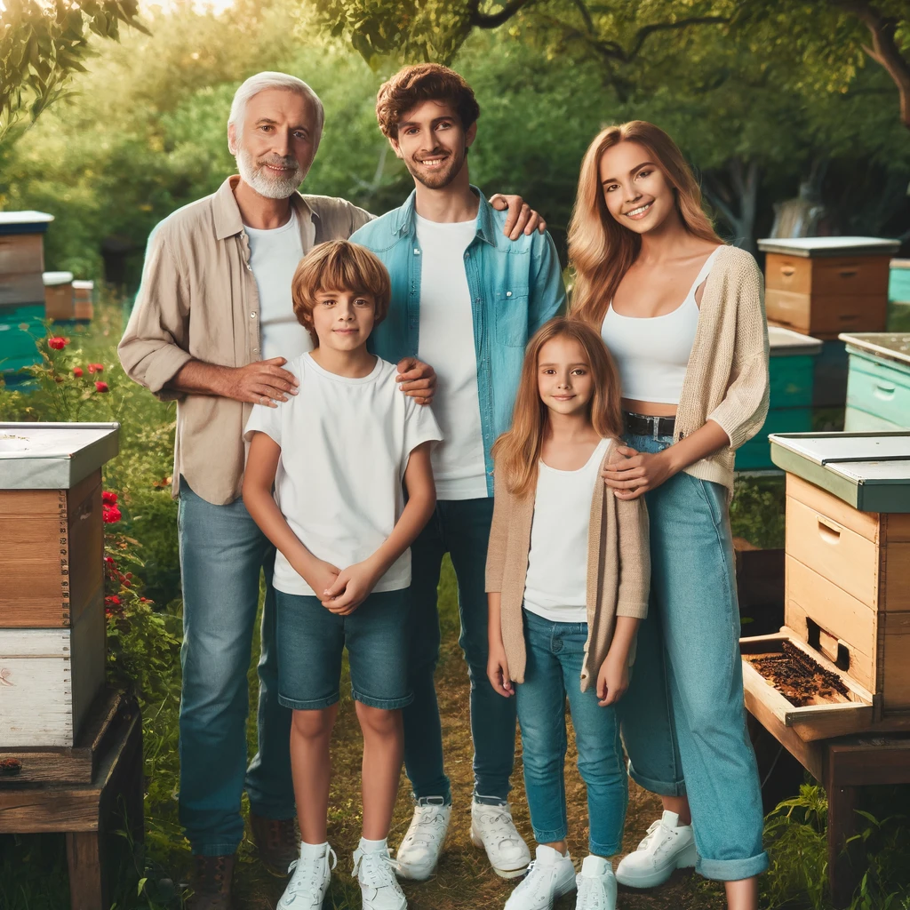
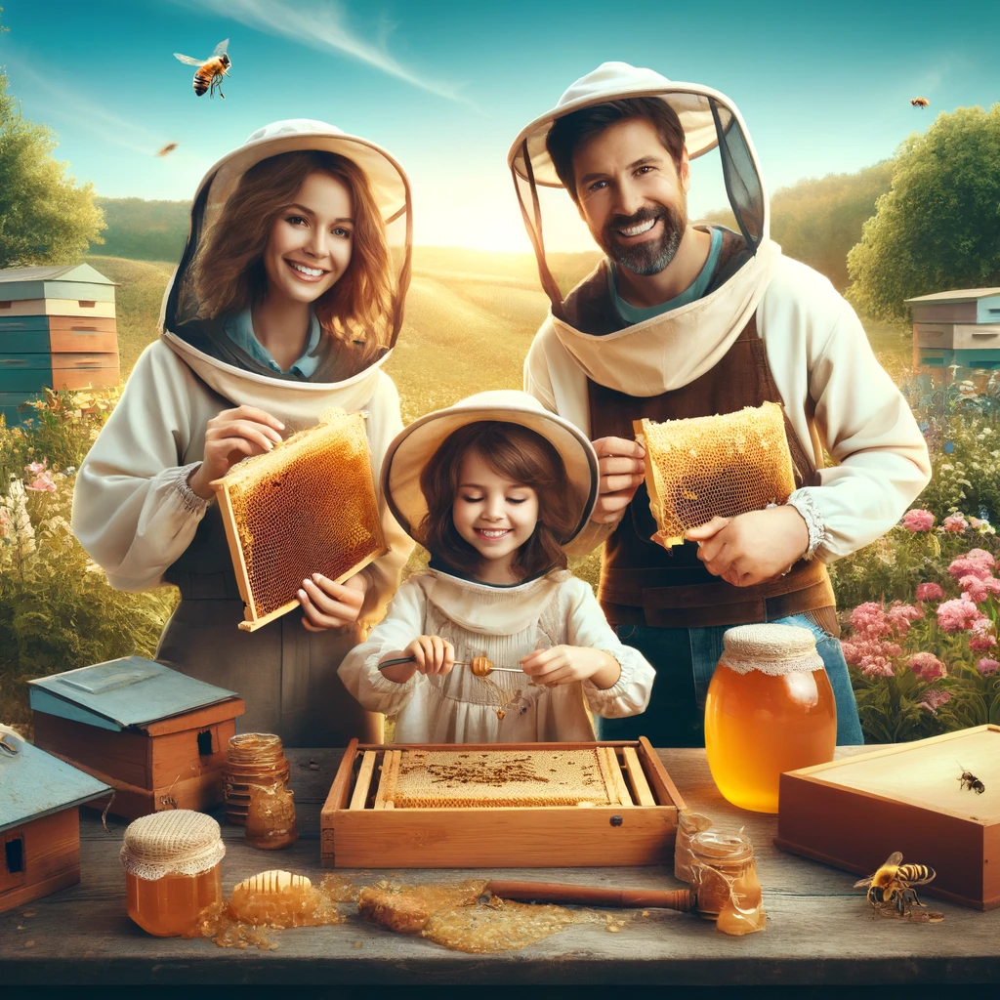
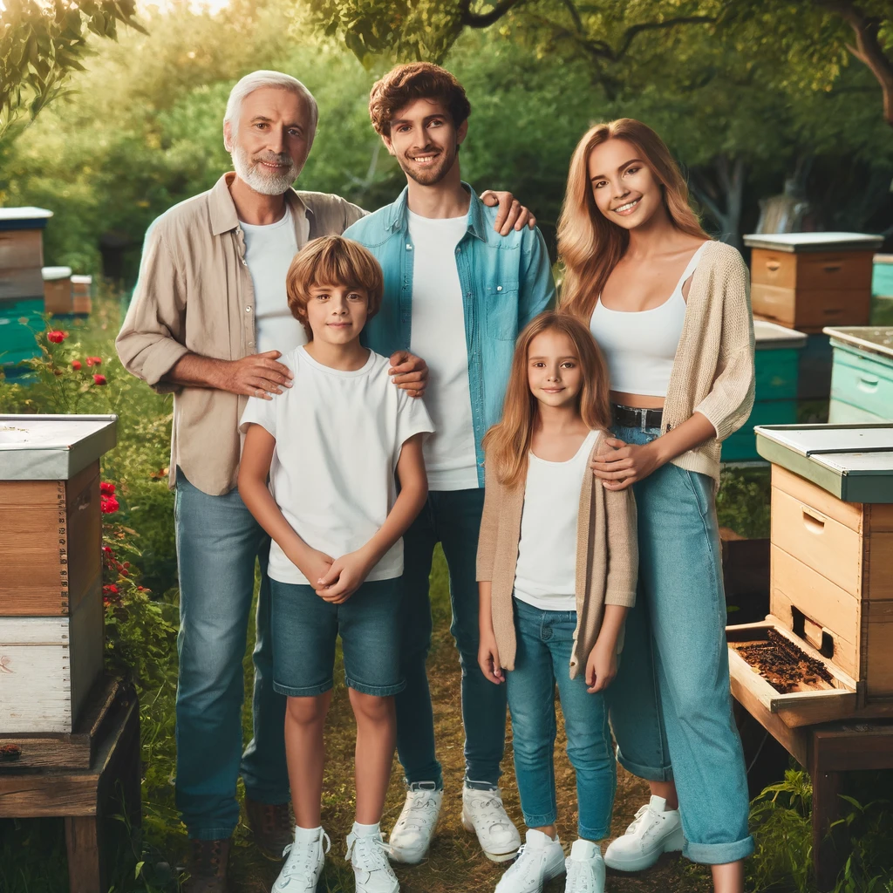
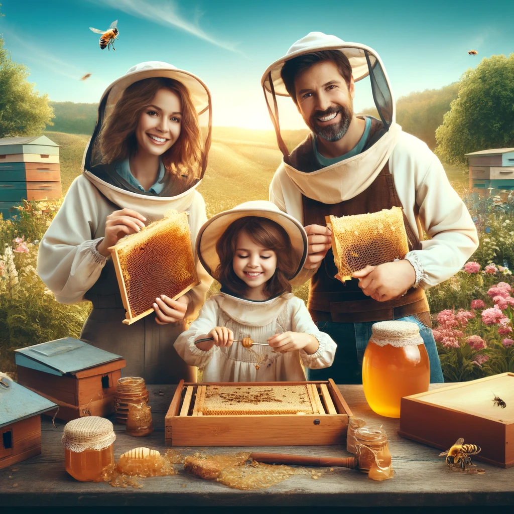

Welcome to Orasimos Beekeeping
Orasimos Beekeeping is a family-run apiary established in 2024 on the beautiful island of Crete. Our journey into the world of beekeeping began with a passion for nature and a love for bees. We are dedicated to producing the finest organic honey and bee-related products, all while maintaining a sustainable and environmentally-friendly approach.
Our Mission
Our mission is to provide high-quality, natural honey and bee products that promote health and well-being. We strive to preserve the natural habitat of our bees, ensuring they thrive in a healthy and balanced environment.
Meet the Family
At Orasimos Beekeeping, our family is at the heart of everything we do. We work together to manage our hives, harvest honey, and produce a variety of bee products. Our commitment to excellence is reflected in every jar of honey and every product we create.
 



Our Products
From aromatic thyme honey to rich carob honey, our range of products showcases the diverse flavors of Crete. We also offer propolis, royal jelly, beeswax candles, and more. Each product is carefully crafted to ensure the highest quality and taste.


Contact Us
We love to hear from our customers and fellow bee enthusiasts. Whether you have a question about our products or want to learn more about beekeeping, feel free to get in touch with us.